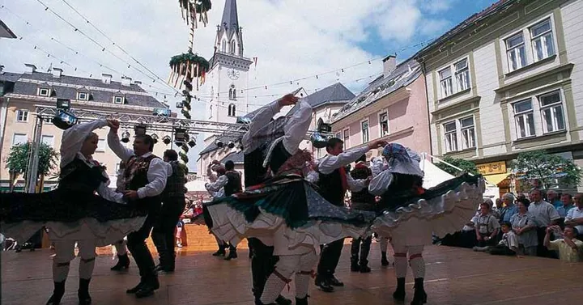

da gio 7 mag a gio 24 set
Mercato contadino al Faaker See
Titolo originale: Faaker Bauernmarkt Jeden Donnerstag - Start 7. Mai geht bis zum 24. September 2026 Der Faaker See Bauernmarkt lädt Gäste ein, regionale Produkte, traditionelle Spezialitäten und echtes Kärntner Marktflair zu entdecken. Gäste erleben bäuerliche Köstlichkeiten, handgemachte Produkte und persönliche Begegnungen mit Produzent:innen aus der Region. Die Veranstaltung verbindet Kulinarik, Handwerk und geselliges Beisammensein zu einem authentischen Genusserlebnis am Faaker See. Erfahre mehr
Evento in Austria. Titolo e informazioni essenziali sono presentati in italiano; il programma originale resta consultabile alla fonte.
 Indicazioni
Indicazioni
- Costi e prenotazioni
- Costo non indicato · Prenotazione non indicata
- Programma
- Programma da verificare. Apri la fonte ufficiale per orari e possibili aggiornamenti.
- In caso di maltempo
- Nessuna indicazione specifica pubblicata.
- Note
- Acquisito automaticamente dalla fonte.
L’EVENTO
Descrizione completa
Evento in Austria. Titolo e informazioni essenziali sono presentati in italiano; il programma originale resta consultabile alla fonte.
IL PROGRAMMA
Programma e orari
Appuntamenti raccolti dalle fonti elencate. Dove manca un orario, non è ancora disponibile in questa scheda.
Programma pubblicato
- Dal 2026-05-07 al 2026-09-24
INFORMAZIONI UTILI
Prima di partire
- Controllare la fonte prima di partire.
ORGANIZZAZIONE